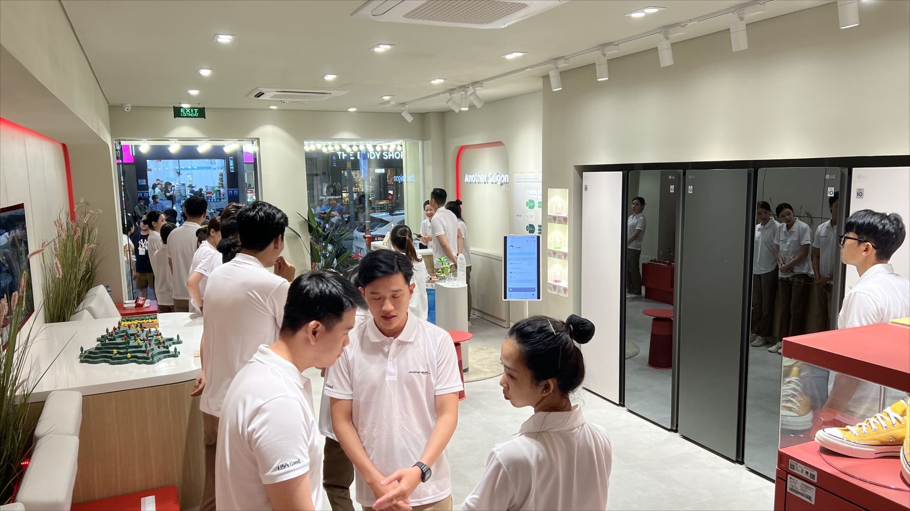
현장 스태프와 방문객이 함께 체험 흐름을 운영한 공간
글로벌 플래그십 · 해외 법인 이관
베트남 호치민에 구축한 LG전자 최초의 5층 규모 플래그십 스토어에서, 오프라인 공간과 모바일 서비스를 연결한 참여형 고객 경험을 설계했습니다. QR 체크인부터 관심사 선택, 체험 추천, 미션·리워드, 만족도 조사까지 현장 방문 전 과정을 하나의 고객 여정으로 구성했습니다.

현장 스태프와 방문객이 함께 체험 흐름을 운영한 공간
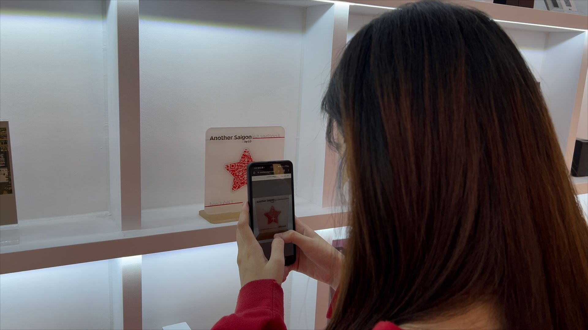
모바일 웹으로 공간 콘텐츠를 탐색하는 방문객
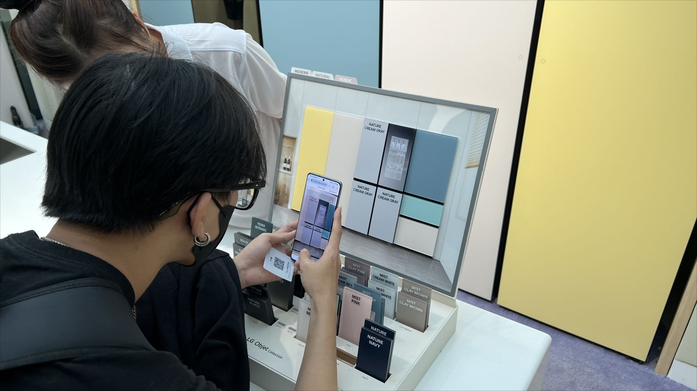
제품 체험과 연결된 모바일 인터랙션 운영 장면
프로젝트 방향과 요구사항 협의
LG전자와의 커뮤니케이션 및 의사결정 조율
현지 운영을 위한 산출물과 운영 기준 이관
01 · 여정 흐름 — QR 체크인부터 운영 데이터까지 이어지는 전체 과정
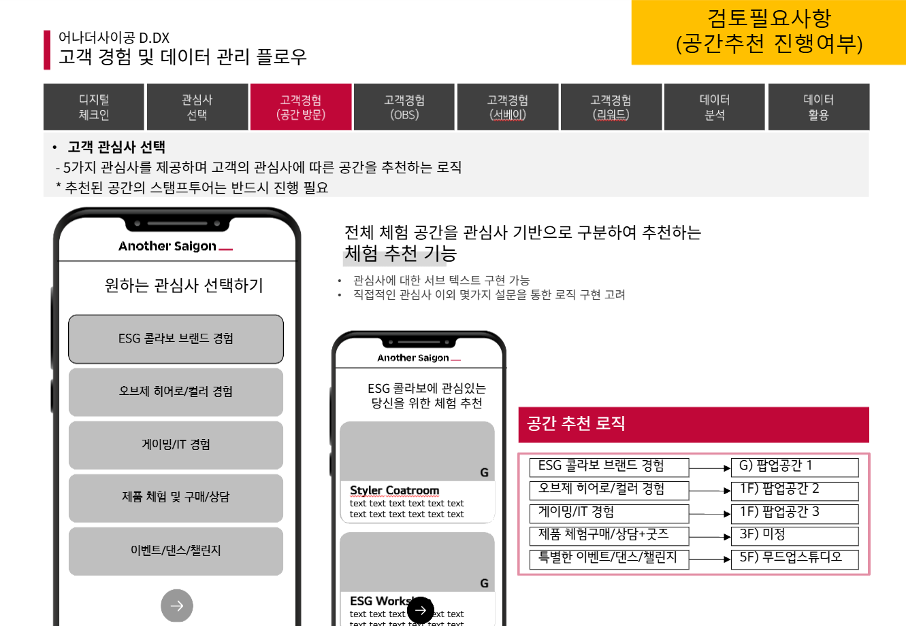
사전 기획안 — 진행 방향을 먼저 검토받은 뒤 상세 화면설계서(와이어프레임) 작업에 착수
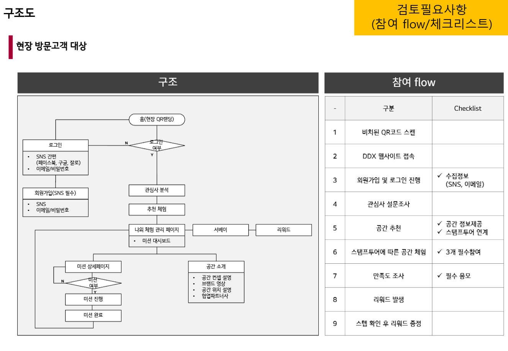
QR 체크인부터 리워드 수령까지 정의한 현장 방문객 참여 플로우 다이어그램
02 · 로그인 설계와 AI 데이터 수집, 판단이 담긴 2곳
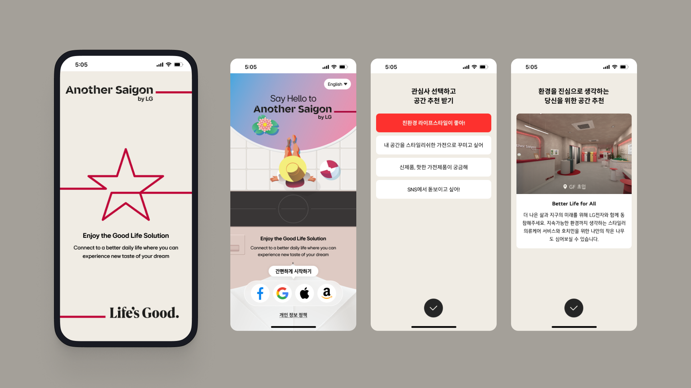
QR 접속 후 Google·Facebook·Apple·Amazon 계정으로 로그인할 수 있도록 구성하고, 영어와 베트남어로 체험을 제공했습니다. 로그인 정보는 이후 관심사 추천, 미션 참여, 만족도 조사 흐름에 활용되도록 설계했습니다.
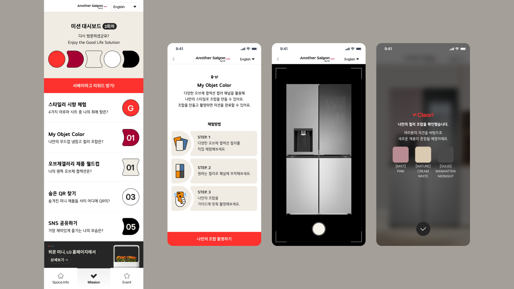
방문자가 선호하는 냉장고 패널 색상 앞에서 체험 사진을 촬영하도록 유도하고, Google Cloud Vision으로 사진을 분석해 색상 선호 데이터를 추출하는 조사 방식을 설계했습니다. 촬영 플로우와 수집 데이터의 활용 기준도 함께 정의했습니다.
03 · 설계 → 구현 비교
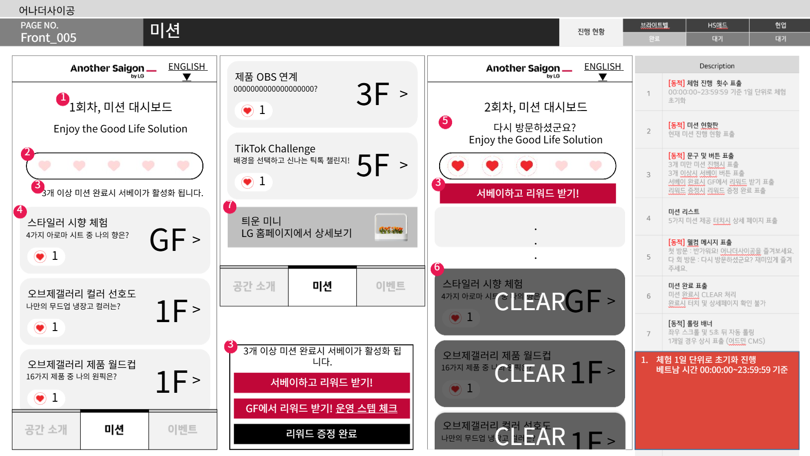
Before · 설계 — 미션 참여 화면 와이어프레임
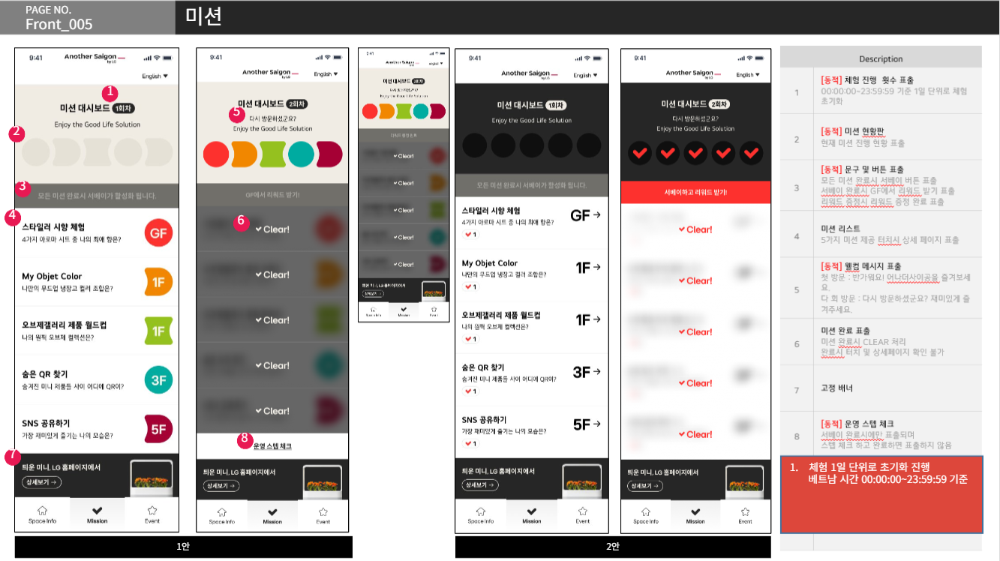
After · 디자인 — 와이어프레임을 반영한 미션 참여 화면 디자인
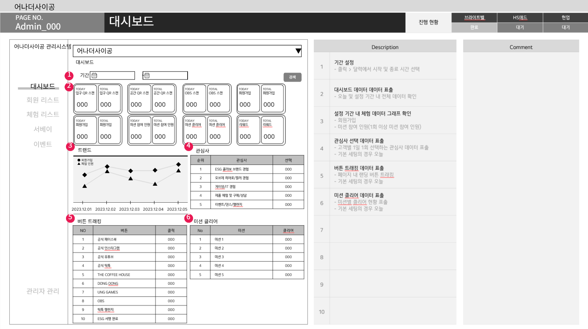
Before · 설계 — 관리자 대시보드 참여 데이터 항목과 화면 구조를 정의한 와이어프레임
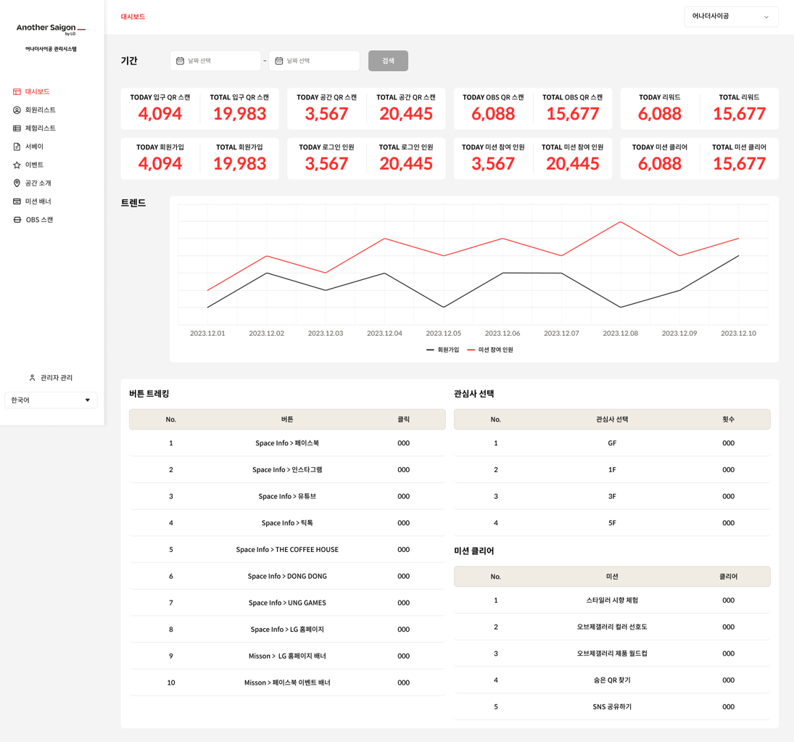
After · 디자인 — 와이어프레임을 반영해 시각화한 관리자 대시보드
04 · CRM 퍼널 구조와 데이터 활용 로드맵 제안
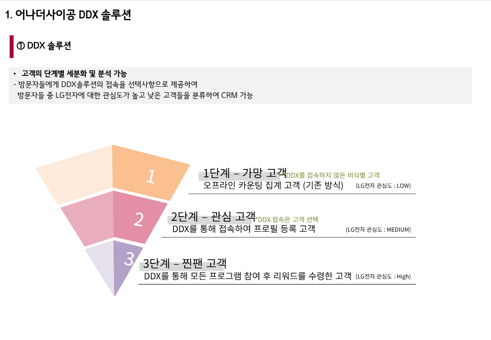
관심사 선택과 체험 참여를 기준으로 고객 단계를 구분한 CRM 퍼널 아키텍처
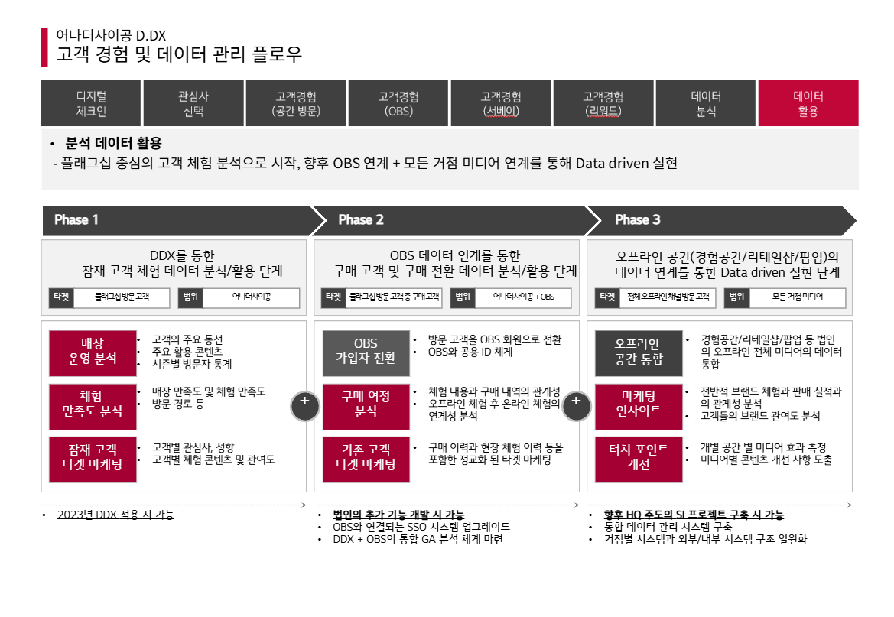
데이터 활용 로드맵 — Phase 1(자사 시스템) → Phase 2(LG 홈페이지 로그인 연동) → Phase 3(오프라인 통합) 제안
05 · 현지 법인 이관 — 조건 검토와 실행 문서
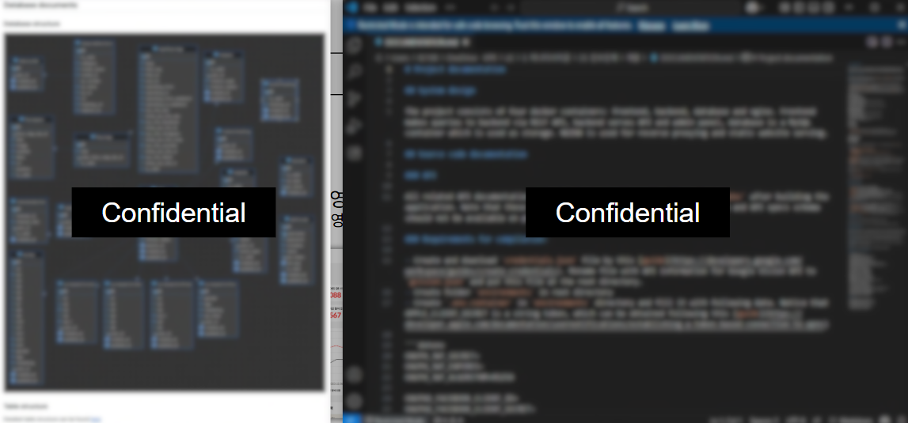
현지 운영 이관과 기술 지원 범위를 정리한 서비스 아키텍처
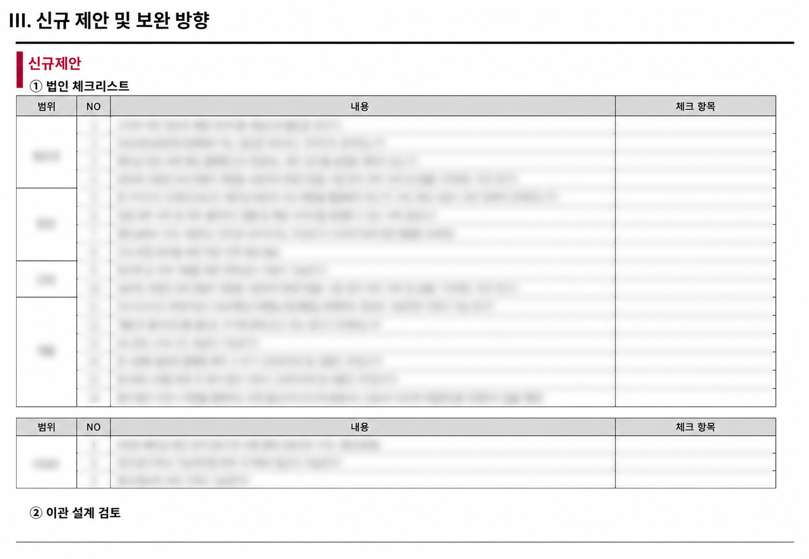
이관 체크리스트 — 현지 법인과 커뮤니케이션한 이관 항목 점검 문서
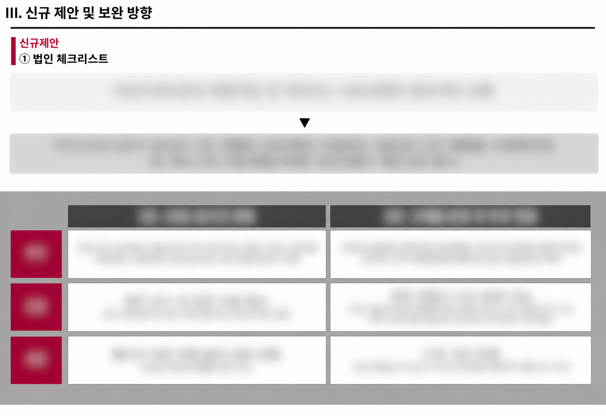
이관 방식 검토 — 현지 서버 세팅 후 개발 vs 자체 개발 후 이관, 2가지 방안 비교
QR 체크인부터 관심사 추천, 미션·리워드, VOC 수집까지 하나의 여정으로 연결
체험 사진을 Google Cloud Vision으로 분석해 냉장고 패널 색상 선호 데이터를 수집하는 조사 체계 구축
체크인부터 VOC까지 현장 데이터를 관리자 대시보드와 회원 목록에서 조회 가능하도록 전환
베트남 법인 이관에 필요한 데이터·보안·서버 운영 기준을 검토해 이관 가능한 상태로 완성